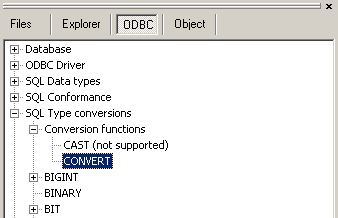

The CAST function defined in SQL92 is equivalent to the CONVERT function defined in ODBC. The syntax of the equivalent functions is as follows:
ODBC: SELECT { fn CONVERT (value-exp, data-type)} ....
CAST: SELECT (value-exp AS data-type) ....
To see if either is supported, look this up in the ODBC tree:

Here you can find whether the standard CAST is supported (in this case it isn't) and if the ODBC function CONVERT is your friendly helper (in this case it is!)This SQL Reference is not the complete documentation for your SQL language. For more detailed information see the documentation of your RDBMS.